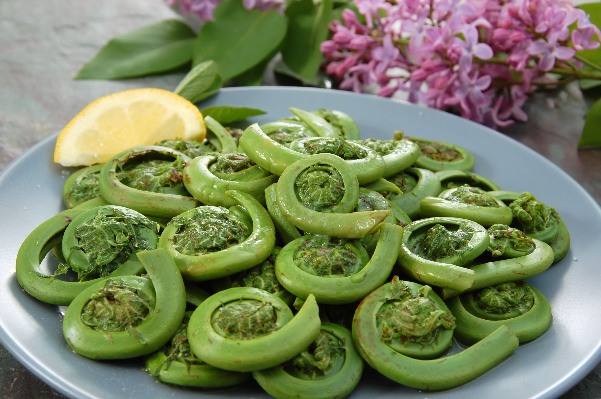
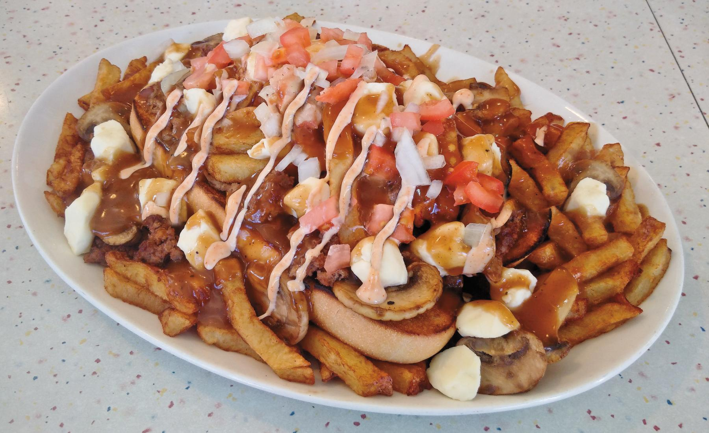
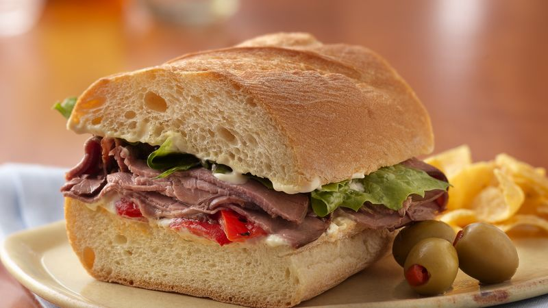
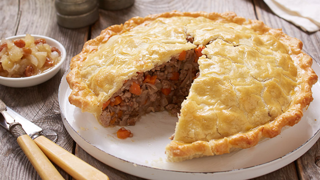
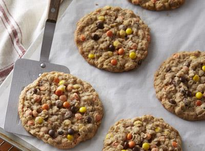

Peameal bacó
Són lloms de bacó fets a partir de lloms de porc tallats a fines rodanxes i enrotllat en farina de blat de moro.

Són fulles de falguera que encara estan per madurar i es troben enrotllades. Es cuina amb pollastre, patates i altres vegetals.
Consisteix en patates fregides untades en formatge cheddar i salsa de carn
És un sandvitx amb pa integral de sègol que porta vedella fumada, mostassa i cogombres.
Són lloms de bacó fets a partir de lloms de porc tallats a fines rodanxes i enrotllat en farina de blat de moro.
És pastís de carn
És pastís de fruites del bosc, amb una base de galeta untada en crema de formatge i amb un topping de maduixes, nabius i gerds.

És una petita pasta feta de mantega, sucre, xarop d’auró i ous.


Es fan de xocolata, mantega de cacauet i menta picada.
Són quadrades, estan fetes de neules esmicolat, glacejat de mantega amb gust de crema o mantega i xocolata fosa

És un pastís que es prepara en capes i té gust de vainilla o també xocolata. Cada capa es cobreix amb un glacejat blanc i cremós que sol ser de formatge o crema de mantega.